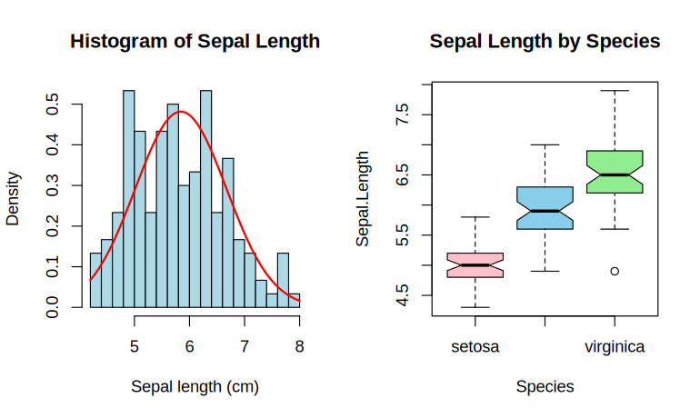
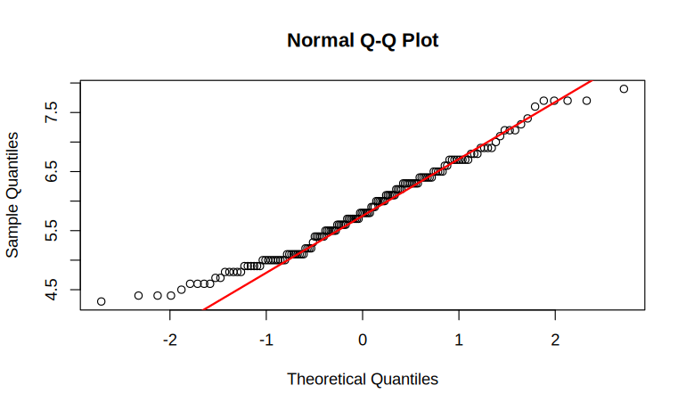
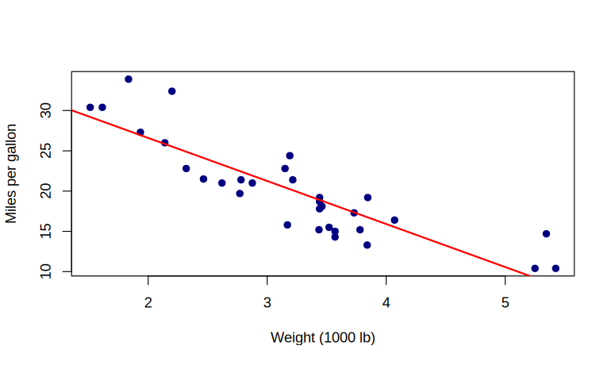
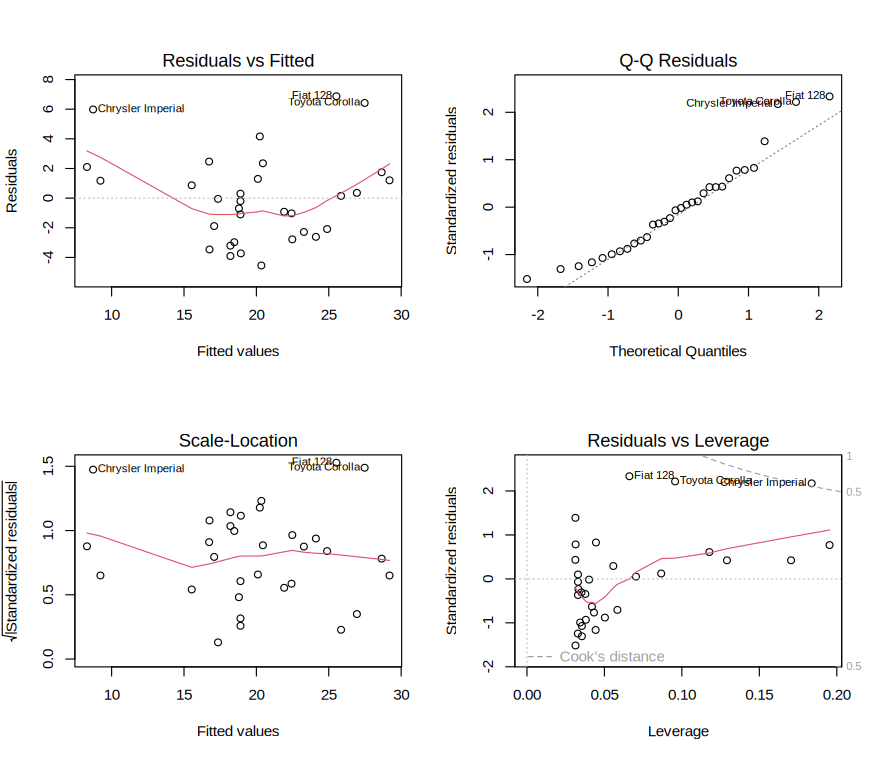

iris, mtcars, airquality, sleep) or a CSV from the UCI ML
Repository.Import the built-in airquality dataset (153 observations, 6 variables), examine its
structure, count and handle the missing values, and create subsets.
To read a dataset into R, inspect it, deal with missing values (drop or impute), and perform sub-setting.
A copy, aq, is imputed, so that airquality itself is left as it was loaded.
| Command or formula | What it does |
|---|---|
data(), str() | load a built-in dataset; show its structure |
colSums(is.na(d)) | the number of missing values in each column |
na.omit(d) | drops every row with a missing value |
d$v[is.na(d$v)] <- mean(d$v, na.rm = TRUE) | replaces the missing values by the mean (mean-imputation) |
subset(d, condition) | the rows meeting a condition |
write.csv(d, file, row.names = FALSE) | saves a data frame as a CSV file |
# Experiment 1: Data Import & Preprocessing
# Step 1: Load the data and inspect its structure
data(airquality)
str(airquality)
# Step 2: Count the missing values in each column
colSums(is.na(airquality))
# Step 3: Drop the rows with any missing value
clean <- na.omit(airquality)
nrow(clean)
# Step 4: Or mean-impute Ozone, keeping every row
aq <- airquality
aq$Ozone[is.na(aq$Ozone)] <- mean(aq$Ozone, na.rm = TRUE)
colSums(is.na(aq))
# Step 5: Subset the hot days
hot <- subset(aq, Temp > 80)
nrow(hot)
# Step 6: Save the cleaned file
write.csv(clean, "airquality_clean.csv", row.names = FALSE)'data.frame': 153 obs. of 6 variables:
$ Ozone : int 41 36 12 18 NA 28 23 19 8 NA ...
$ Solar.R: int 190 118 149 313 NA NA 299 99 19 194 ...
$ Wind : num 7.4 8 12.6 11.5 14.3 14.9 8.6 13.8 20.1 8.6 ...
$ Temp : int 67 72 74 62 56 66 65 59 61 69 ...
$ Month : int 5 5 5 5 5 5 5 5 5 5 ...
$ Day : int 1 2 3 4 5 6 7 8 9 10 ... Ozone Solar.R Wind Temp Month Day
37 7 0 0 0 0 [1] 111 Ozone Solar.R Wind Temp Month Day
0 7 0 0 0 0 [1] 68Nothing is printed: write.csv() writes the file airquality_clean.csv into the working directory.
The dataset has 153 rows, with 37 missing values in Ozone and 7 in Solar.R; na.omit leaves
111 complete rows, while mean-imputing Ozone keeps all 153 (Solar.R still has its 7). There are 68 days hotter than
80°F. The cleaned data are saved for later experiments.
For iris$Sepal.Length (150 observations), compute the standard descriptive statistics and
the shape measures (skewness, kurtosis), then interpret.
To summarise a numeric variable in R with measures of location, dispersion and shape.
The central moments are computed directly; moments::skewness() and moments::kurtosis() use the same formulas.
summary(x) is in base R; the psych package's describe(x) adds more.
| Command or formula | What it does |
|---|---|
mean median var sd range IQR | location and dispersion; var and sd divide by \(n-1\) |
| Skewness | \(\sqrt{b_1} = m_3/m_2^{3/2}\), with \(m_k = \frac1n\sum(x - \bar x)^{k}\) |
| Kurtosis | \(b_2 = m_4/m_2^{2}\); 3 for a normal curve |
# Experiment 2: Descriptive Statistics
# Step 1: Location and dispersion
data(iris); x <- iris$Sepal.Length
c(mean = mean(x), median = median(x), var = var(x), sd = sd(x), IQR = IQR(x))
range(x)
# Step 2: Skewness and kurtosis, from the moments
m <- function(k) mean((x - mean(x))^k) # k-th central moment
c(skewness = m(3) / m(2)^1.5, kurtosis = m(4) / m(2)^2)
# Step 3: A fuller report (optional)
summary(x) mean median var sd IQR
5.8433333 5.8000000 0.6856935 0.8280661 1.3000000
[1] 4.3 7.9 skewness kurtosis
0.3117531 2.4264321 Min. 1st Qu. Median Mean 3rd Qu. Max.
4.300 5.100 5.800 5.843 6.400 7.900 moments package gives skewness() and kurtosis(); where it is not installed, the two lines above compute the same values from the central moments.
Sepal.Length has mean 5.84 cm, median 5.80 and standard deviation 0.83 (variance 0.686, IQR 1.3). It is mildly right-skewed (skewness 0.31 > 0) and platykurtic (kurtosis 2.43 < 3): slightly flatter than a normal curve.
Cross-classify iris flowers by Species and by whether the petal is "Long" (Petal.Length > 4) or "Short", and test whether Species and petal category are independent. As a variant, test 120 simulated rolls of a die for fairness.
To build a contingency table and apply the chi-square test of independence, and a goodness-of-fit test.
| Command or formula | What it does |
|---|---|
ifelse(cond, a, b) | makes a categorical variable from a condition |
table(f1, f2) | the contingency table of counts |
chisq.test(tbl) | \(\chi^2 = \sum (O-E)^2/E\) on \((r-1)(c-1)\) d.f.; on a one-way table, against equal probabilities |
# Experiment 3: Frequency Analysis & Chi-Square
# Step 1: Make the petal category and the two-way table
big <- ifelse(iris$Petal.Length > 4, "Long", "Short")
tbl <- table(iris$Species, big); tbl
# Step 2: Test independence
chisq.test(tbl)
# Step 3: Goodness of fit: 120 simulated rolls of a die
set.seed(7); rolls <- sample(1:6, 120, replace = TRUE)
table(rolls)
chisq.test(table(rolls)) # expected: 20 of each big
Long Short
setosa 0 50
versicolor 34 16
virginica 50 0
Pearson's Chi-squared test
data: tbl
X-squared = 105.84, df = 2, p-value < 2.2e-16rolls
1 2 3 4 5 6
18 25 19 20 18 20
Chi-squared test for given probabilities
data: table(rolls)
X-squared = 1.7, df = 5, p-value = 0.8889\(\chi^2 = 105.84\) on 2 d.f., \(p < 2.2 \times 10^{-16}\): independence is rejected — petal category is strongly associated with species (every setosa is "Short", every virginica "Long"). For the die, \(\chi^2 = 1.7\) on 5 d.f., \(p = 0.89\): the simulated rolls are consistent with a fair die.
Visualise iris variables with histograms and boxplots, and assess the normality of
Sepal.Length with a Q-Q plot and the Shapiro–Wilk test.
To produce diagnostic plots and a formal normality test to judge whether a variable is normally distributed.
| Command or formula | What it does |
|---|---|
hist(x, freq = FALSE), curve(dnorm(x, m, s), add = TRUE) | a density histogram with the fitted normal curve over it |
boxplot(y ~ group) | one box per group |
qqnorm(x), qqline(x) | the normal Q-Q plot and its reference line |
shapiro.test(x) | the Shapiro–Wilk test of \(H_0\): normal |
# Experiment 4: Basic Visualizations & Normality
# Step 1: Histogram with the normal curve, and boxplots by species
par(mfrow = c(1, 2))
hist(iris$Sepal.Length, breaks = 15, col = "lightblue", freq = FALSE,
main = "Histogram of Sepal Length", xlab = "Sepal length (cm)")
curve(dnorm(x, mean(iris$Sepal.Length), sd(iris$Sepal.Length)), add = TRUE, col = "red", lwd = 2)
boxplot(Sepal.Length ~ Species, data = iris, notch = TRUE,
col = c("pink", "skyblue", "lightgreen"), main = "Sepal Length by Species")
par(mfrow = c(1, 1))
# Step 2: The Q-Q plot
qqnorm(iris$Sepal.Length); qqline(iris$Sepal.Length, col = "red", lwd = 2)
# Step 3: The Shapiro–Wilk test
shapiro.test(iris$Sepal.Length)

Shapiro-Wilk normality test
data: iris$Sepal.Length
W = 0.97609, p-value = 0.01018The histogram is roughly bell-shaped, the boxplots show Sepal.Length rising from setosa to virginica (with one low virginica value), and the Q-Q points follow the line except in the tails. Shapiro–Wilk gives \(W = 0.976\), \(p = 0.0102\), just below 0.05: normality is borderline — a caution to consider the non-parametric tests of Experiment 6.
Carry out (a) a one-sample t-test of \(H_0:\mu = 50\) on ten measurements, (b) a two-sample (Welch)
t-test comparing setosa and versicolor Sepal.Length, (c) a paired t-test on the sleep data, and (d) a
one-way ANOVA of Sepal.Length by Species, with Tukey's comparisons.
To perform parametric tests of means (one-sample, two-sample, paired) and ANOVA in R and report the p-values.
The two groups of sleep are the same ten patients, so the test is paired.
| Command or formula | What it does |
|---|---|
t.test(x, mu = m0) | one-sample: \(t = (\bar x - \mu_0)/(s/\sqrt n)\) |
t.test(x, y) | two-sample, Welch (unequal variances) by default |
t.test(x, y, paired = TRUE) | paired: a one-sample test on the differences |
aov(y ~ group), TukeyHSD() | one-way ANOVA, \(F = MS_{between}/MS_{within}\), and all pairwise comparisons |
# Experiment 5: Hypothesis Testing (t-tests & ANOVA)
# Step 1: (a) One-sample t-test
x <- c(48, 52, 49, 53, 51, 47, 55, 50, 49, 52)
t.test(x, mu = 50)
# Step 2: (b) Two-sample Welch t-test
setosa <- iris$Sepal.Length[iris$Species == "setosa"]
versicolor <- iris$Sepal.Length[iris$Species == "versicolor"]
t.test(setosa, versicolor)
# Step 3: (c) Paired t-test on sleep
data(sleep)
with(sleep, t.test(extra[group == 1], extra[group == 2], paired = TRUE))
# Step 4: (d) One-way ANOVA and Tukey's comparisons
fit <- aov(Sepal.Length ~ Species, data = iris)
summary(fit)
TukeyHSD(fit)
One Sample t-test
data: x
t = 0.77174, df = 9, p-value = 0.46
alternative hypothesis: true mean is not equal to 50
95 percent confidence interval:
48.84126 52.35874
sample estimates:
mean of x
50.6
Welch Two Sample t-test
data: setosa and versicolor
t = -10.521, df = 86.538, p-value < 2.2e-16
alternative hypothesis: true difference in means is not equal to 0
95 percent confidence interval:
-1.1057074 -0.7542926
sample estimates:
mean of x mean of y
5.006 5.936
Paired t-test
data: extra[group == 1] and extra[group == 2]
t = -4.0621, df = 9, p-value = 0.002833
alternative hypothesis: true mean difference is not equal to 0
95 percent confidence interval:
-2.4598858 -0.7001142
sample estimates:
mean difference
-1.58 Df Sum Sq Mean Sq F value Pr(>F)
Species 2 63.21 31.606 119.3 <2e-16 ***
Residuals 147 38.96 0.265
---
Signif. codes: 0 ‘***’ 0.001 ‘**’ 0.01 ‘*’ 0.05 ‘.’ 0.1 ‘ ’ 1
Tukey multiple comparisons of means
95% family-wise confidence level
Fit: aov(formula = Sepal.Length ~ Species, data = iris)
$Species
diff lwr upr p adj
versicolor-setosa 0.930 0.6862273 1.1737727 0
virginica-setosa 1.582 1.3382273 1.8257727 0
virginica-versicolor 0.652 0.4082273 0.8957727 0t.test(extra ~ group, data = sleep, paired = TRUE) works in older versions of R but is refused from R 4.4.0 onwards; the two-vector form works in every version.
(a) The ten measurements are consistent with \(\mu = 50\) (\(t = 0.77\), \(p = 0.46\)). (b) Setosa and versicolor differ strongly (\(t = -10.52\), \(p < 2.2 \times 10^{-16}\)). (c) The drug has a significant paired effect (\(t = -4.06\), 9 d.f., \(p = 0.0028\)). (d) The species means differ (\(F = 119.3\), \(p < 2 \times 10^{-16}\)), and Tukey's comparisons show all three pairs different.
Repeat the location comparisons of Experiment 5 without the normality assumption: a one-sample
Wilcoxon signed-rank test, a paired signed-rank test on sleep, and a Wilcoxon rank-sum
(Mann–Whitney) test for setosa against versicolor; compare the last with its parametric counterpart.
To apply rank-based non-parametric tests and contrast them with the parametric t-tests.
| Command or formula | What it does |
|---|---|
wilcox.test(x, mu = m0) | one-sample signed-rank test |
wilcox.test(x, y, paired = TRUE) | paired signed-rank test |
wilcox.test(x, y) | rank-sum (Mann–Whitney) test |
# Experiment 6: Non-Parametric Tests
# Step 1: One-sample signed-rank test
x <- c(48, 52, 49, 53, 51, 47, 55, 50, 49, 52)
wilcox.test(x, mu = 50)
# Step 2: Paired signed-rank test on sleep
with(sleep, wilcox.test(extra[group == 1], extra[group == 2], paired = TRUE))
# Step 3: Rank-sum test, setosa against versicolor
setosa <- iris$Sepal.Length[iris$Species == "setosa"]
versicolor <- iris$Sepal.Length[iris$Species == "versicolor"]
wilcox.test(setosa, versicolor)
# Step 4: The two p-values side by side
data.frame(Test = c("Welch t", "Wilcoxon rank-sum"),
p = c(t.test(setosa, versicolor)$p.value, suppressWarnings(wilcox.test(setosa, versicolor)$p.value)))
Wilcoxon signed rank test with continuity correction
data: x
V = 28.5, p-value = 0.5113
alternative hypothesis: true location is not equal to 50
Warning messages:
1: In wilcox.test.default(x, mu = 50) :
cannot compute exact p-value with ties
2: In wilcox.test.default(x, mu = 50) :
cannot compute exact p-value with zeroes
Wilcoxon signed rank test with continuity correction
data: extra[group == 1] and extra[group == 2]
V = 0, p-value = 0.009091
alternative hypothesis: true location shift is not equal to 0
Warning messages:
1: In wilcox.test.default(extra[group == 1], extra[group == 2], paired = TRUE) :
cannot compute exact p-value with ties
2: In wilcox.test.default(extra[group == 1], extra[group == 2], paired = TRUE) :
cannot compute exact p-value with zeroes
Wilcoxon rank sum test with continuity correction
data: setosa and versicolor
W = 168.5, p-value = 8.346e-14
alternative hypothesis: true location shift is not equal to 0 Test p
1 Welch t 3.746743e-17
2 Wilcoxon rank-sum 8.345827e-14The non-parametric tests agree with the parametric ones: no shift from 50 in the one-sample case (\(V = 28.5\), \(p = 0.51\)); a significant paired effect on sleep (\(p = 0.009\)); and a strong setosa–versicolor difference (\(W = 168.5\), \(p = 8.3 \times 10^{-14}\), against Welch's \(3.7 \times 10^{-17}\)). Wilcoxon is preferred when normality is doubtful, as Experiment 4 flagged.
Using mtcars, model fuel economy (mpg) as a linear function of weight
(wt), check the residuals, and predict mpg for weights 2.5, 3.5 and 4.5 (thousand lb).
To fit a simple linear regression, assess it (R², residual diagnostics) and forecast with prediction intervals.
| Command or formula | What it does |
|---|---|
lm(y ~ x), summary(fit) | fit \(\hat y = a + bx\), \(b = S_{xy}/S_{xx}\); coefficients, \(R^2\), tests |
plot(fit) | the four residual diagnostic plots |
shapiro.test(resid(fit)) | normality of the residuals |
predict(fit, newdata, interval = "prediction") | predictions with 95% prediction intervals |
# Experiment 7: Linear Regression Modeling
# Step 1: Fit the model
data(mtcars); fit <- lm(mpg ~ wt, data = mtcars)
summary(fit)
# Step 2: The scatter with the fitted line
plot(mtcars$wt, mtcars$mpg, pch = 19, col = "navy",
xlab = "Weight (1000 lb)", ylab = "Miles per gallon")
abline(fit, col = "red", lwd = 2)
# Step 3: The residual diagnostics
par(mfrow = c(2, 2)); plot(fit); par(mfrow = c(1, 1))
# Step 4: Normality of the residuals
shapiro.test(resid(fit))
# Step 5: Predict at 2.5, 3.5 and 4.5
predict(fit, data.frame(wt = c(2.5, 3.5, 4.5)), interval = "prediction")
Call:
lm(formula = mpg ~ wt, data = mtcars)
Residuals:
Min 1Q Median 3Q Max
-4.5432 -2.3647 -0.1252 1.4096 6.8727
Coefficients:
Estimate Std. Error t value Pr(>|t|)
(Intercept) 37.2851 1.8776 19.858 < 2e-16 ***
wt -5.3445 0.5591 -9.559 1.29e-10 ***
---
Signif. codes: 0 ‘***’ 0.001 ‘**’ 0.01 ‘*’ 0.05 ‘.’ 0.1 ‘ ’ 1
Residual standard error: 3.046 on 30 degrees of freedom
Multiple R-squared: 0.7528, Adjusted R-squared: 0.7446
F-statistic: 91.38 on 1 and 30 DF, p-value: 1.294e-10

Shapiro-Wilk normality test
data: resid(fit)
W = 0.94508, p-value = 0.1044 fit lwr upr
1 23.92395 17.554110 30.29378
2 18.57948 12.254262 24.90469
3 13.23500 6.750452 19.71956\(\widehat{mpg} = 37.285 - 5.344\,wt\): each extra 1000 lb lowers fuel economy by about 5.3 mpg. The
model is highly significant (\(p = 1.29 \times 10^{-10}\)) and explains 75.3% of the variation (\(R^2 = 0.753\)); the
residuals show no strong departure from normality (Shapiro–Wilk \(p = 0.10\)), though the residuals-against-fitted
plot bends upward at both ends — a hint that a straight line understates mpg for the lightest and heaviest cars, and
that a curved term in wt is worth trying. Predicted mpg falls from 23.9 at
2.5 to 13.2 at 4.5, each with a 95% prediction interval about ±6.4 mpg wide.
mtcars, airquality, iris, etc.) for variety.